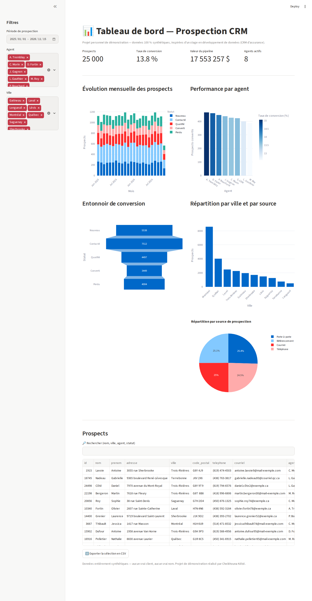

Diplômé de l'UQTR (oct. 2026), je transforme des données brutes en tableaux de bord exploitables — du nettoyage des données à la visualisation.
Diplômé en informatique, cheminement science des données (UQTR, octobre 2026), je cherche un poste junior en analyse de données ou en BI.
En stage chez Sphère Contact inc. (Trois-Rivières, mai–août 2026), j'ai développé un CRM pour l'assurance (React, FastAPI, PostgreSQL) et automatisé un ETL en Python / Pandas / SQL traitant de 10 000 à 60 000 lignes de prospection — en remplacement de traitements manuels dans Excel.
Je travaille en français, je me débrouille en anglais professionnel, et je prépare la certification Microsoft Azure Fundamentals (AZ-900).
Montréal, Québec — prêt à me relocaliser
Disponible immédiatement, temps plein
B. Sc. A. en informatique, science des données — UQTR, 90 crédits sur 90
Assistant informatique chez MS-Associates (juin–sept. 2022) · Développeur backend PHP / MySQL au Domaine de l'impôt (avr.–juin 2022).
2023 – 2026 · Trois-Rivières
B. Sc. A. en informatique, science des données — UQTR
90 crédits sur 90 · Moyenne cumulative 3,23 / 4,30 · Diplôme obtenu le 7 octobre 2026.
Mai – août 2026 · Trois-Rivières
Stage — Développeur logiciel Data et Backend, Sphère Contact inc.
CRM pour l'assurance : React, FastAPI, PostgreSQL, intégration d'API. ETL automatisé Python / Pandas / SQL sur 10 000 à 60 000 lignes de prospection (noms, adresses, agents).
Nov. 2026 · Montréal
En recherche d'un poste junior en données / BI
Disponible immédiatement, temps plein, prêt à me relocaliser.
03 — Galerie
Mon parcours en images
Trois moments : la fin de mon programme de technicien au Sénégal, ma graduation à l'UQTR, et la présentation de mon projet de stage.
Graduation — B. Sc. A. en informatique, UQTR, 2026Diplôme Supérieur de Technicien (DST), UCAD-ESP, Dakar, 2022Présentation de l'affiche scientifique — projet de stage Sphère Contact, UQTR, 2026
04 — Projets
Projets
Des projets concrets, avec des chiffres réels. Les données du CRM sont 100 % synthétiques.
01 — Data & BI
Dashboard Prospection CRM

Capture du tableau de bord — KPI, évolution mensuelle, entonnoir de conversion et répartition par ville.
Tableau de bord Streamlit (Python / Pandas / SQL) : entonnoir de conversion, filtres, table consultable et export CSV.